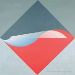
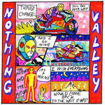
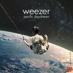

Quick Takes (October 2017)
Welcome to our next to last Quick Takes of the year! As expected, the entire No Ripcord staff has been hard at work on getting our Year-End list ready by next month. With that said, Carl and I would be remiss if we don't cover a good amount of releases before sending off the year. Speaking of this particular feature, or as you may have figured out after reading my greeting, we will still run it next month before we take a break in December (because who really wants us to review 98 Degrees' completely unnecessary Christmas album).
Alright, so back to the main topic at hand. October certainly didn't disappoint, as we really had to think about cutting it down to five albums each. I personally had a tough time dealing with the fact that many of my childhood heroes are currently releasing some of their most underwhelming material to date (Weezer, Beck) while Carl's opinions this month were far more optimistic despite having been disappointed by some artists who are experiencing a transitional phase (Benjamin Clementine, Jessie Ware). But we both agree that it was a heavily-favored month for female voices, as they make up seven out of the ten albums we chose.
What were your favorite albums of the month of October? Anything we didn't get to review on our site that we should've? You can always reach us on facebook, or on our official twitter page. - Juan
...
Beck
Colors
(Fonograf Records)
Back in the nineties, Beck was one of the most groundbreaking artists in popular culture. He’s arguably held that reputation for close to two decades now, but outside of his more introspective singer-songwriter releases, he’s struggled to insert himself back into the music zeitgeist when he tries to reach for a wider demographic. And it almost seemed as if he could pull it off with Colors, as all the singles that lead into its release - Wow and surprise chart performer Dreams - were joyous bursts of radio pop with a healthy dollop of his own unique insight. The road to Colors took a full two years, and when it finally came to light with a more new-wave leaning direction, it left one feeling a mixture of both relief and disappointment. Charging power-pop anthems like I’m So Free and Dear Life agree with his current stature as an elder statesman who can try to keep it cool, except that when he veers into strummy gloss pop (Up All Night, Square One) it makes him sound out of touch. Beck is inclined to try out his sampling of assorted genres with plenty of whimsy, but it certainly doesn’t do much to quiet those who protested against his Grammy-winning upset, either. [6/10] Juan Edgardo Rodríguez
 Benjamin Clementine
Benjamin Clementine
I Tell a Fly
(Digital Distribution Trinidad and Tobago)
Benjamin Clementine is an interesting case. His 2015 debut At Least For Now picked up the Mercury Prize, and offered the extraordinarily unique artist the platform to channel his musings to a larger audience. All that considered, you have to admire his determination to conceive a concept album about a pair of romantic flies in amongst a whirlwind of geo-political discord. Couple that notion with the fact that Clementine seems to regard it as a mission to confound and befuddle the listener with senseless arrangements and sonically sardonic climates, and you have to feel that he has missed an opportunity to use his raw to raise his stock and line his pockets. It’s impossible to judge his voice due to the sheer insolence of its metamorphosis, veering from the Queen’s English to overindulgent impressionism. Hints of regularity are often dropped before being snatched away from you in vaudevillian style. There’s an awful lot to be admired about Clementine’s approach, but it’s certainly not an easy listen. [5/10] Carl Purvis
Bully
Losing
(Sub Pop)
Bully’s debut Feels Like notched itself my own personal gong of the best album of 2015 and has been one of my most played records since its release. It hasn’t lost its appeal, with the voracious honesty and intense poise of I Remember, Six and Picture still hitting every bit as hard as it did two years ago. Losing is another great piece of work, agile in its incessant infection and displaying more confidence and control than its predecessor. Bognanno’s knack for combining a deliciously heady, fuzzed out hook with a spirited - or delicate - vocal delivery is superb. Opening track Feel The Same is the Bully blueprint in a nutshell, settling into an urgent but comfortable groove where Bognanno’s desperate vocals can make themselves at home. Her ability on both sides of the mixing deck is on full display throughout Losing, and her latest work strengthens her case as a supremely talented songwriter and producer. [8/10] Carl Purvis
Circuit des Yeux
Reaching for Indigo
(Drag City)
The story that inspired Reaching for Indigo - Haley Fohr’s latest as Circuit des Yeux - is meant to defy any reasonable logic. One night, Fohr felt possessed by a presence that overwhelmed her, to the point that she felt she obliged to make some substantial life changes. She treats these complex emotions with her typically histrionic personality on Indigo, where she attempts to find clarity by way of her experimental folk compositions as she travels within the tenebrous passageways of her psyche. Her icy baritone is still a powerful tool, both intimating and intriguing, a highly modulated contrast of beauty and contradiction that captivates with overwhelming sensations. Fohr details her cathartic experience with a smothering array of droning textures and clashing orchestral elements, where she succeeds at making sense out of her cosmic encounter. While it gives a feeling of unease, Indigo is actually about seeking to understand through self-identification. And ultimately, having to move forward with what’s outside of her immediate scope. [8/10 - Believe the Hype] Juan Edgardo Rodríguez
Colleen
A flame my love, a frequency
(Thrill Jockey)
Cecile Schott explores the dichotomy of life and death on A flame my love, a frequency. The French multi-instrumentalist, who goes by Colleen, has always found new and inventive ways to break the barriers of electronic music. This time, she’s parted ways with her cherished viola de gamba in favor of a pocket piano and some analog synthesizers, instruments she found while she was poking around at a music store during her last tour. This change brings about a more methodical approach to ambiance, utilizing a collage of dainty sounds that confer some kind of utopian wonderland. The open spaces she works with are stunningly evocative, but her compositions are no less busy, a testament to how she’s based much of her compositional framework on a song’s underlying rhythms. It provides a strong feeling of familiarity for those who’ve followed Colleen’s work throughout the years. But this is meant to give beauty and reverence to mortality as a whole, a concept that, according to Schott’s view, is worth celebrating notwithstanding its unpredictable nature. [8/10] Juan Edgardo Rodríguez
 Fever Ray
Fever Ray
Plunge
(Mute)
Karin Dreijer (who – it appears – has dropped the Andersson) returned last month with her first new record as Fever Ray in almost a decade in scintillating form. Plunge is an aggressively intricate trapeze of electronics, with soundscapes varying drastically in degrees of hardness whilst supercharged synth bursts patrol the arrangements. Her voice seems to be the only thing in the record immune to the force-field; just as likely to be found massaging lovingly as it would be embarking on a trail of shocking violence. The electronic work is fantastic throughout Plunge, never adhering to presets and making full use of every beat, burst and throb. When coupled with Dreijer’s slick, razor-sharp vocal you have a monster of a record that gets more impressive with every listen. [8/10] Carl Purvis
 Jessie Ware
Jessie Ware
Glasshouse
(Island)
The third LP from Jessie Ware sees her bring her diva mode to the forefront of her sound, but the lack of the scarcity and minimalism that saw her emerge at the turn of the decade results in the finished product lacking the effectiveness of her earlier work. Opening track Midnight is an R&B powerhouse, emerging as a three-headed hybrid of Janet Jackson, Whitney Houston and Mariah Carey, but there isn’t much here to get excited about in 2017, and this is where the album misses its mark most notably. In recent years there have been countless examples of artists using past blueprints to great effect, making the finished product more than a tribute to the sounds that influenced them so greatly. Unfortunately, Ware fails here, settling into a comfort zone that doesn’t show off her talents to their fullest extent. Her voice is beautiful and as smooth as silk, but Glasshouse isn’t her best work. [5/10] Carl Purvis
Makthaverskan
III
(Run for Cover)
Makthaverskan ache with sweet longing on III. Even if the Swedish four-piece follow their native country’s history of writing indie pop anthems, there’s also a darker side to their driving hooks. Vocalist Maja Milner belts out with an impressively muscular agility as an anxious rhythm section gives the whole of III a tone that is at once warm and enigmatic. Their songs zip by in such a rush that they require some time to fully appreciate at first, given that they embrace sharply-punctuated rhythms akin to the melancholic post-punk of bands like Joy Division and The Wake. But what Makthaverskan lack in variety they make up with a passion that cannot be quenched, and the dreamy undercurrent it carries throughout is filled with a shot of optimism that is undoubtedly contagious. [7/10] Juan Edgardo Rodríguez
Melkbelly
Nothing Valley
(Wax Nine Records)
Chicago four-piece Melkbelly’s debut LP is a break-neck exhibition of frenetic noise-rock, fully equipped with evasive melodies and unsettling elasticity. Nothing Valley also happens to be the inaugural release from Sadie Dupuis’s (of Speedy Ortiz fame) record label, and there are many hallmarks of their song structures that would put them in the same ballpark as Dupuis’s band. Where Speedy Ortiz intricately structure songs, however, Melkbelly deconstruct them, appearing more like Speedy Ortiz’s more violent, less academic classmate. That is not intended to invite negative connotations, either: Nothing Valley is organised chaos, with every bewildering direction shift meticulously executed. It races out of the blocks with two tracks weighing in at a little over two minutes, with James Wetzel’s desultory drumming severing any tethers that Miranda Winters unfurls from the front of her band. Nothing Valley is an intense, hugely engaging listen. [7/10] Carl Purvis
Weezer
Pacific Daydream
(Crush Music)
Weezer are masters of self-sabotage. Not that it’s necessarily a deliberate choice, but the veteran alt-rockers thoroughly enjoy following their own path and expect their fervent fanbase to follow their every step. Pacific Daydream is not a marked departure from last year’s surprisingly exceptional Weezer (White Album), but it does attempt to modernize the classic California pop they’ve been clasping onto as of late. Much of the album’s electro-lite flavoring does provide some hummable moments, but as the cringingly tricked out Mexican Fender and stomping chants of La Mancha Screwjob suggest, they’re most likely to suffer a slow and gradual death at your local Forever 21. Still, there are shades of what Weezer do best on a track such as Weekend Woman, a soaring guitar pop anthem where frontman Rivers Cuomo comes close to replicating Brian Wilson’s compositional intellect. By now we would’ve expected Weezer to move on from writing summer hymns with younger people in mind, even if they genuinely try to write something special on Pacific Daydream. It’s been good for now, but it’ll serve them well if they go back to the shack to plot a new course. [5/10] Juan Edgardo Rodríguez
23 November, 2017 - 05:14 — No Ripcord Staff